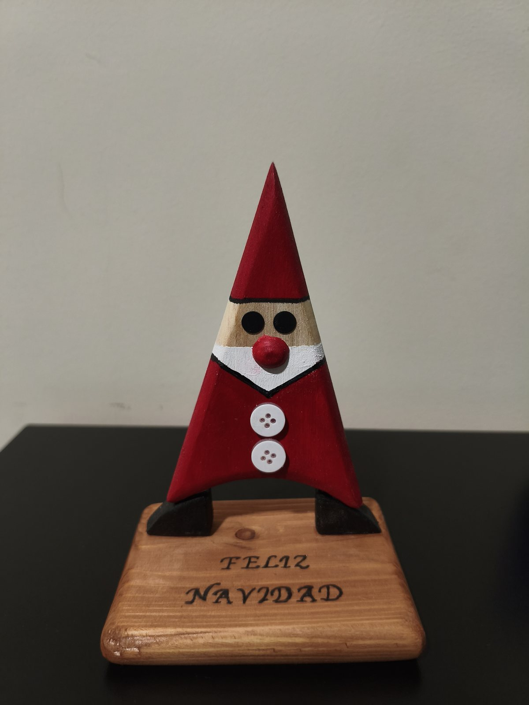
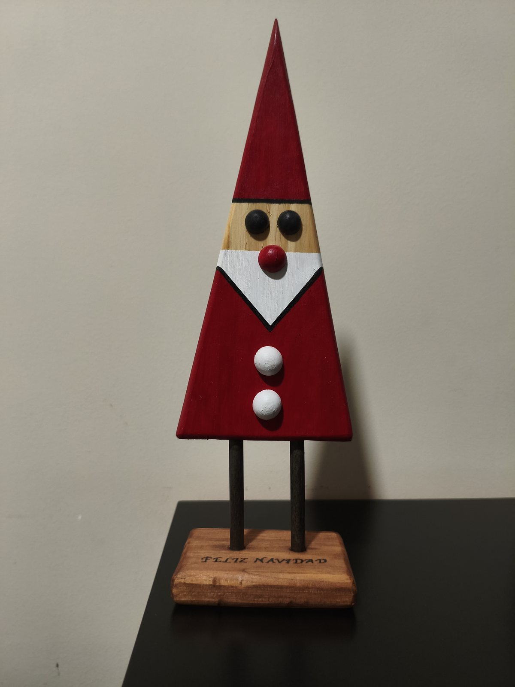

HECHO A MANO · CON CALMA
Pequeñas piezas,
grandes recuerdos.
Figuras navideñas talladas en madera, una a una, para acompañar tus celebraciones año tras año.
Descubrir las piezasCada pieza tiene su propia historia

PIEZAS HECHAS A MANOLa magia está en los detalles
ARTE · MADERA · NAVIDAD · ✳
UNA COLECCIÓN CON ALMA
Hechas para atesorar.
Formas sencillas, madera noble y ese pequeño encanto imperfecto de lo hecho a mano.
De un trozo de madera,
nace algo único.
Cada figura comienza con un trozo de madera y termina convertida en algo irrepetible. Tallado, lijado y pintura: todo hecho despacio, cuidando cada detalle.
Hablemos de tu ideaUN REGALO QUE VUELVE CADA DICIEMBRE
¿Buscas una pieza especial?
Cuéntame qué tienes en mente.
Enviar un correo